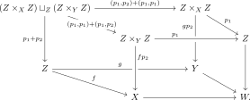

Theorem 5.16. (Generalized Blakers–Massey, Anel et al. (2020))
Let \((L,R)\) be a modality in \(T\), and consider a pushout square
If \(\Delta_f \square_Z \Delta_g\) lies in \(L\), then also the gap map \(Z \to X \times_W Y\) lies in \(L\).
Proof
The proof has three steps. We first replace one leg by its effective-epimorphism part. We then encode the assumed pushout product as the gap map of one face of a cube. Modal descent propagates this information across the cube, after which cancellation identifies the original square as \(L\)-cartesian.Consider a pushout square where \(\Delta_f \square_Z \Delta_g \in L\). We must show that also \(Z \to X \times_W Y \in L\).We first reduce to the case where \(f\) is an effective epimorphism. Indeed, letting \(X'\) be the image of \(f\), we get a commutative diagram where the two displayed squares are still pushouts. By Proposition 3.11, the lower square is a pullback square. We then observe that the diagonal \(\Delta_f\) is isomorphic to the diagonal \(\Delta_{f'}\), and that the gap map \(Z \to X \times_W Y\) agrees with the gap map \(Z \to X' \times_{W'} Y\) of the top square.
Since \(X' \to X\) is a monomorphism and \(f\) factors through \(X'\), the canonical map \(Z \times_{X'} Z \to Z \times_X Z\) is an isomorphism. Under this isomorphism the two diagonal maps from \(Z\) agree. Moreover, the lower pullback square identifies \(X'\) with \(X \times_W W'\). Since \(Y \to W\) factors through \(W'\), we obtain
\[X \times_W Y \iso (X \times_W W') \times_{W'} Y \iso X' \times_{W'} Y.\]
These identifications commute with the maps from \(Z\).
Mapping an arbitrary object \(K\) into \(Z \times_X Z\) amounts to giving two maps \(K \rightrightarrows Z\) whose composites to \(X\) agree. Because \(X' \to X\) is a monomorphism, this agreement is equivalent to agreement after mapping to \(X'\), which gives the first isomorphism. Similarly, a map \(K \to X \times_W Y\) is a pair of maps to \(X\) and \(Y\) agreeing over \(W\). The map to \(Y\) already determines a map to \(W'\), and the pullback square forces the map to \(X\) to factor uniquely through \(X'\), giving the second isomorphism.
It thus suffices to prove the statement for the top square, or equivalently in the case where \(f\) is an effective epimorphism.Unwinding definitions, we see that the map
is given on the first component by \((p_1,p_2,p_1,p_1)\) and on the second by \((p_1,p_1,p_1,p_2)\).
Regard \(Z \times_X Z\) and \(Z \times_Y Z\) as pointed objects of \(T_{/Z}\), with structure map \(p_1\) and basepoint given by the corresponding diagonal. The pushout product of the two basepoints is the canonical map from their wedge to their product. Its source is therefore \((Z \times_X Z) \sqcup_Z (Z \times_Y Z)\), while its target is their fiber product over \(Z\).
On the summand \(Z \times_X Z\), the map to the first factor of the product is the identity \((p_1,p_2)\), while the map to \(Z \times_Y Z\) is the diagonal applied to \(p_1\), namely \((p_1,p_1)\). This gives \((p_1,p_2,p_1,p_1)\). The calculation on the other summand is symmetric and gives \((p_1,p_1,p_1,p_2)\). The fiber product is taken using the first projections, which is why the repeated coordinate is \(p_1\).
In particular, this map is the gap map of the top face of the following commutative cube:

We now make the following series of claims:
The top face is a pushout. More generally, for objects \(A,B\) in some pointed category \(C\) (here \(C = T_{Z//Z}\)) the lower-right corner of is a pushout, by the pasting property of pushout squares.
In \(C=T_{Z//Z}\) the zero object is the identity of \(Z\). Take \(A=Z \times_X Z\) and \(B=Z \times_Y Z\), with their diagonal basepoints and first projections as structure maps. Then \(A \vee B\) is exactly \((Z \times_X Z) \sqcup_Z (Z \times_Y Z)\), and the lower-right square in the displayed \(3\)-by-\(3\) diagram is the top face of the cube.
Call the upper-left, upper-right, and lower-right squares \((a)\), \((b)\), and \((c)\). The square \((a)\) is the pushout square defining \(A \vee B\). The composite rectangles \((a)+(b)\) and \((b)+(c)\) are trivial pushout squares. Since \((a)\) and \((a)+(b)\) are pushouts, the pushout pasting law first shows that \((b)\) is a pushout. Since \((b)\) and \((b)+(c)\) are pushouts, it then shows that \((c)\) is a pushout. This is the required lower-right square.
The left and back faces are \(L\)-cartesian. By symmetry it suffices to do this for the left face. Writing \(\sigma\colon Z \times_Y Z \xrightarrow{\cong} Z \times_Y Z\) for the swap map, this face decomposes as The left square is \(L\)-cartesian by hypothesis. The right square is a pullback square. It follows that the outer rectangle is \(L\)-cartesian.
The gap map of the left square is the assumed map \(\Delta_f \square_Z \Delta_g\), precomposed with the isomorphism \(\id \sqcup \sigma\). Hence it lies in \(L\). The gap map of the right square is an isomorphism because that square is cartesian, so it also lies in \(L\). Part (1) of Proposition 5.21 then shows that their composite, which is the left face of the cube, is \(L\)-cartesian.
The automorphism \(\id \sqcup \sigma\) changes only the ordering of the two coordinates coming from \(Z \times_Y Z\). Precomposition by an isomorphism produces an isomorphic arrow. Since every isomorphism lies in \(L\) and \(L\) is closed under composition, membership in \(L\) is unchanged.
By modal descent applied when \(I\) is the span diagram \(\pushout\), the front and right faces are \(L\)-cartesian.
The cube is a pushout square in the arrow category: its top and bottom faces are pushouts, while its left and back faces are the two input morphisms. Those input faces are \(L\)-cartesian by the preceding claims. Since Proposition 5.23 says that \(L\)-cartesian arrows are closed under colimits, the remaining two structure maps in this pushout square, namely the front and right faces, are also \(L\)-cartesian.
Let \(I\) be the category indexing a span. The top and bottom faces are obtained by taking the colimits of the corresponding spans in the upper and lower levels of the cube. The left and back faces give the naturality squares of an \(L\)-cartesian transformation between these spans. Applying modal descent to the two endpoint inclusions into the colimit gives precisely the front and right faces.
No separate stability theorem for cubical diagrams is being invoked. The only inputs are that the two horizontal faces are pushouts, that the two adjacent faces are \(L\)-cartesian, and that the subcategory of \(L\)-cartesian arrows is closed under the span-shaped colimit, exactly as asserted by Proposition 5.23.
Finally, we may decompose the right face of the diagram as the composite of two squares: Here the left square is cartesian, \(f\) was assumed to be an effective epimorphism, and the outer rectangle is \(L\)-cartesian by the previous point. It follows from Proposition 5.21 that the right square is \(L\)-cartesian.
Apply part (2) of Proposition 5.21. Its square \(A\) is the cartesian left square displayed above, its composite \(A+B\) is the \(L\)-cartesian outer rectangle, and the map called \(f\) there is the effective epimorphism \(Z \to X\) along their common lower edge. The conclusion is that \(B\), the right square, is \(L\)-cartesian.
The left square is cartesian because \(Z \times_X Z\) is the pullback of \(f\) along itself. A cartesian square is \(L\)-cartesian since its gap map is an isomorphism. The outer rectangle is the right face of the cube and was shown \(L\)-cartesian by modal descent. Finally, the image reduction made \(f\) an effective epimorphism. Thus every hypothesis of part (2) is used exactly once.
This gives the claim.
The right square just proved \(L\)-cartesian is the original pushout square with vertices \(Z,Y,X,W\). Its gap map is, by definition, the canonical map \(Z \to X \times_W Y\). Thus its being \(L\)-cartesian is exactly the desired conclusion.
References
Mathieu Anel, Georg Biedermann, Eric Finster, André Joyal. A generalized Blakers-Massey theorem. J. Topol., 13 (4), 1521–1553. 2020.


 In \(C=T_{Z//Z}\) the zero object is the identity of \(Z\). Take \(A=Z \times_X Z\) and \(B=Z \times_Y Z\), with their diagonal basepoints and first projections as structure maps. Then \(A \vee B\) is exactly \((Z \times_X Z) \sqcup_Z (Z \times_Y Z)\), and the lower-right square in the displayed \(3\)-by-\(3\) diagram is the top face of the cube.Call the upper-left, upper-right, and lower-right squares \((a)\), \((b)\), and \((c)\). The square \((a)\) is the pushout square defining \(A \vee B\). The composite rectangles \((a)+(b)\) and \((b)+(c)\) are trivial pushout squares. Since \((a)\) and \((a)+(b)\) are pushouts, the pushout pasting law first shows that \((b)\) is a pushout. Since \((b)\) and \((b)+(c)\) are pushouts, it then shows that \((c)\) is a pushout. This is the required lower-right square.
In \(C=T_{Z//Z}\) the zero object is the identity of \(Z\). Take \(A=Z \times_X Z\) and \(B=Z \times_Y Z\), with their diagonal basepoints and first projections as structure maps. Then \(A \vee B\) is exactly \((Z \times_X Z) \sqcup_Z (Z \times_Y Z)\), and the lower-right square in the displayed \(3\)-by-\(3\) diagram is the top face of the cube.Call the upper-left, upper-right, and lower-right squares \((a)\), \((b)\), and \((c)\). The square \((a)\) is the pushout square defining \(A \vee B\). The composite rectangles \((a)+(b)\) and \((b)+(c)\) are trivial pushout squares. Since \((a)\) and \((a)+(b)\) are pushouts, the pushout pasting law first shows that \((b)\) is a pushout. Since \((b)\) and \((b)+(c)\) are pushouts, it then shows that \((c)\) is a pushout. This is the required lower-right square. The gap map of the left square is the assumed map \(\Delta_f \square_Z \Delta_g\), precomposed with the isomorphism \(\id \sqcup \sigma\). Hence it lies in \(L\). The gap map of the right square is an isomorphism because that square is cartesian, so it also lies in \(L\). Part (1) of Proposition 5.21 then shows that their composite, which is the left face of the cube, is \(L\)-cartesian.The automorphism \(\id \sqcup \sigma\) changes only the ordering of the two coordinates coming from \(Z \times_Y Z\). Precomposition by an isomorphism produces an isomorphic arrow. Since every isomorphism lies in \(L\) and \(L\) is closed under composition, membership in \(L\) is unchanged.
The gap map of the left square is the assumed map \(\Delta_f \square_Z \Delta_g\), precomposed with the isomorphism \(\id \sqcup \sigma\). Hence it lies in \(L\). The gap map of the right square is an isomorphism because that square is cartesian, so it also lies in \(L\). Part (1) of Proposition 5.21 then shows that their composite, which is the left face of the cube, is \(L\)-cartesian.The automorphism \(\id \sqcup \sigma\) changes only the ordering of the two coordinates coming from \(Z \times_Y Z\). Precomposition by an isomorphism produces an isomorphic arrow. Since every isomorphism lies in \(L\) and \(L\) is closed under composition, membership in \(L\) is unchanged.